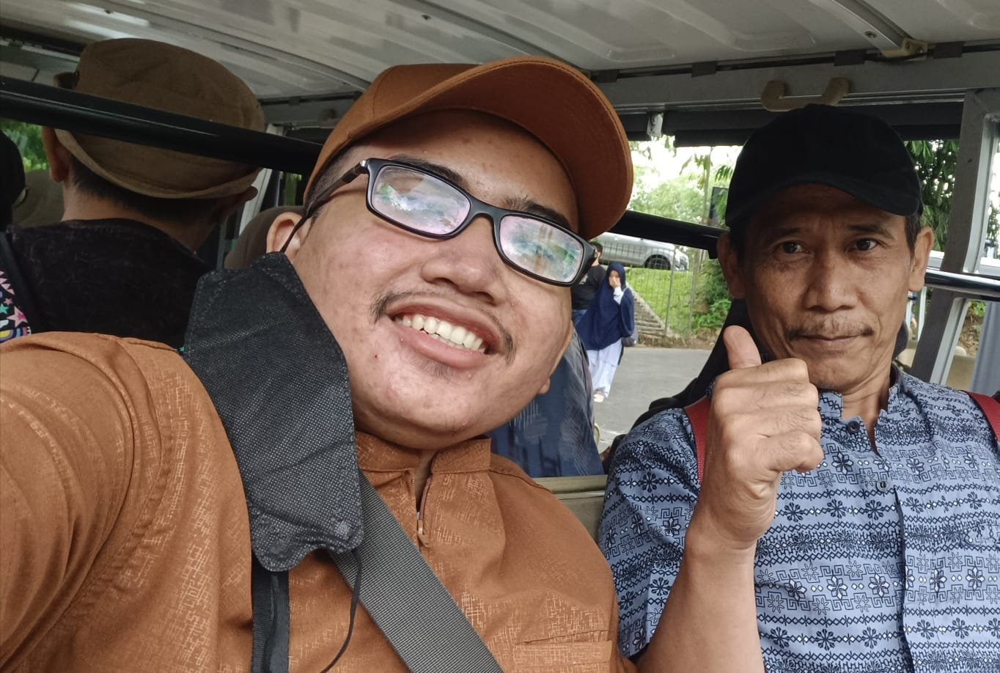

Kenalan dulu
Halo ges nama saya Mohammad Rizki Syahputra. Saya lahir di Jakarta pada tanggal 3 Juni 2006, dan saat ini tinggal di Jalan Cipinang Pulo No. 31 RT 009 RW 012, Cipinang Besar Utara, Jatinegara, Jakarta Timur.
Ringkasan pendidikan
Saya menjalani pendidikan dasar, menengah, tinggi alhamdulillah di negeri. Dan sekarang menjadi Mahasiswa Teknik Informatika semester 2 di Politeknik Negeri Jakarta
Makanan?
Kalau soal makanan, saya nggak ribet. Indomie, nasi goreng, ayam geprek dan ricebowl 😋 Untuk minuman, tergantung mood—kadang suka es teh manis, kadang juga teh anget, apalagi pas hujan.
